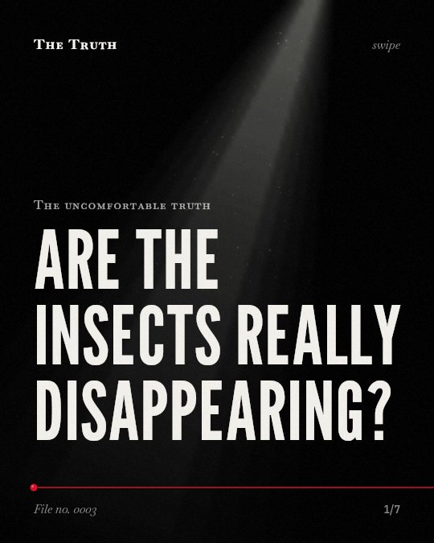

The uncomfortable truth
Are the insects really disappearing?

Terrestrial insects are dying while freshwater insects increase.
Evidence shows a complex picture where land-based insects are declining while those in water show an opposite trend.
Established. Several studies combined, or official data. The evidence is mixed.
What the research found
Flying insect biomass in protected areas in Germany declined by 76% seasonally and 82% in mid-summer over 27 years.
“Our analysis estimates a seasonal decline of 76%, and mid-summer decline of 82% in flying insect biomass over the 27 years of study.”
Study, 2017. Hallmann et al., PloS one.
Nutrient enrichment of nitrogen and phosphorus reduces the abundance of both above-ground and below-ground arthropods.
“N + P enrichment reduced the abundance of above-ground and below-ground arthropods, suggesting that a similar mechanism driving arthropod community change is acting on both groups.”
Experiment, 2022. Nessel et al., Ecology.
Biological effects of non-thermal electromagnetic fields on insects are clearly proven in the laboratory, but only partly in the field.
“Biological effects of non-thermal EMF on insects are clearly proven in the laboratory, but only partly in the field, thus the wider ecological implications are still unknown.”
Meta-analysis, 2023. Thill et al., Reviews on Environmental Health.
Terrestrial insect abundance declined by an average of ~9% per decade, while freshwater insect abundance increased by ~11% per decade.
“an average decline of terrestrial insect abundance by ~9% per decade and an increase of freshwater insect abundance by ~11% per decade.”
Meta-analysis, 2020. Klink et al., Science.
Nutrient additions have stronger negative effects on aquatic insects considered more sensitive to physical-chemical changes, such as Ephemeroptera, Plecoptera, and Trichoptera.
“the negative effects of nutrient additions are stronger for aquatic insects that are considered more sensitive to changes in physical-chemical parameters in their environments, Ephemeroptera, Plecoptera, and Trichoptera (EPT), compared with other aquatic insects.”
Experiment, 2022. Nessel et al., Ecology.
Food availability is a limiting factor for breeding songbirds, with a strong positive effect on reproductive success and a moderate positive effect on chick body condition.
“We found a moderate positive effect of food availability on chick body condition and a strong positive effect on reproductive success. Our results demonstrate that food is generally a limiting factor for breeding songbirds.”
Meta-analysis, 2023. Grames et al., Ecology Letters.
The drivers of these trends vary by habitat.
Nutrient enrichment reduces land and underground arthropods. However, nutrient additions have stronger negative effects on specific aquatic insects like mayflies and stoneflies.
The balance of our ecosystems is shifting.
That may be why the birds you see depend on a shrinking food supply for their reproductive success and health.
This part is our reading of the evidence, not a finding.
A backyard garden in the heat of mid-summer.
You sit outside and notice the air feels heavier and the usual hum of life has gone quiet.
The honest summary
The evidence shows a complex picture where terrestrial insects are declining significantly in biomass and abundance, but freshwater insects are showing an opposite trend.
The findings are highly dependent on the specific environment, such as the distinction between terrestrial and freshwater habitats or protected versus unprotected areas.
What happens when the humming stops?
Sources
- Roel van Klink, Diana E. Bowler, Konstantin B. Gongalsky et al. (2020). Meta-analysis reveals declines in terrestrial but increases in freshwater insect abundances. Science. Meta-analysis, cited 1,228 times.
- Eliza M. Grames, Graham A. Montgomery, Casey Youngflesh et al. (2023). The effect of insect food availability on songbird reproductive success and chick body condition: Evidence from a systematic review and meta‐analysis. Ecology Letters. Meta-analysis, cited 80 times.
- Alain Thill, Marie‐Claire Cammaerts, Alfonso Balmorí (2023). Biological effects of electromagnetic fields on insects: a systematic review and meta-analysis. Reviews on Environmental Health. Meta-analysis, cited 21 times.
- Hallmann CA, Sorg M, Jongejans E, Siepel H, Hofland N, Schwan H, Stenmans W, Müller A, Sumser H, Hörren T, Goulson D, de Kroon H (2017). More than 75 percent decline over 27 years in total flying insect biomass in protected areas. PloS one. Study, cited 3,595 times.
- Mark P. Nessel, Theresa Konnovitch, Gustavo Q. Romero et al. (2022). Decline of insects and arachnids driven by nutrient enrichment: A meta‐analysis. Ecology. Experiment, cited 33 times.
Also read for this file, not quoted
- Holden & Treseder (2013). A meta-analysis of soil microbial biomass responses to forest disturbances.
This file was researched and drafted by software, then checked by rules a model cannot talk its way around: each quote above was matched word for word against the paper, and every number had to appear in it. How files are made.